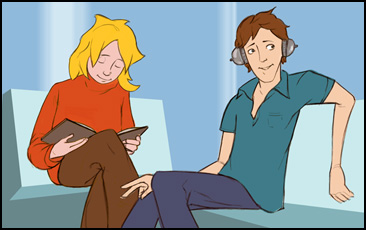

Kinderliteratur zum Lesen und Vorlesen
Katrins Geheimnis von Marion Mebes und Esther Klees
Eine Geschichte über sexuelle Übergriffe unter Kindern. Bilderbuch mit Fachinformation & Begleitmaterial ab 7 Jahre
Verlag mebes & noack
Hände weg von Han Schu, m. Audio-CD von Britta Vollmer
Eine Geschichte über sexuelle Übergriffe unter Kindern. Bilderbuch mit Fachinformation & Begleitmaterial ab 7 Jahre
Verlag mebes & noack
Die Handschuh-Hände verkörpern in Farbe und Aussehen die Figuren des Hörstücks auf der beiliegenden CD. Sie stellen die Buntheit kindlicher Lebendigkeit dar, greifen Gefährdungen auf und geben Kindern Tipps, wie sie sich schützen und helfen können. Das Hörstück, eine eindrucksvolle Ergänzung zum Bilderbuch, erzählt von Han Schu, der von seinem Stiefvater Wilt Leder missbraucht wird. Han findet bei seinen FreundInnen Hilfe und sagt das erste Mal Nein.
Einfach irre! von Robie H. Harris
Liebe, Sex und Kindergriegen näher gebracht.
Bilderbuch für Mädchen und Jungen von 7 bis 12 Jahren.
Verlag DonnaVita
Das bin ich - von Kopf bis Fuß von Dagmar Geisler
Selbstvertrauen und Selbstbewustsein für Kinder.
Bilderbuch für Mädchen und Jungen ab 7 Jahre
Verlag DonnaVita